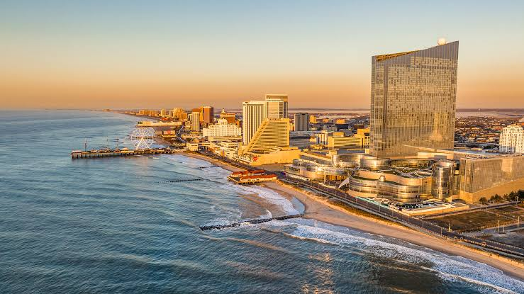

New Jersey ist ein Bundesstaat im Nordosten der Vereinigten Staaten und Teil der Mittelatlantikstaaten. Nach Rhode Island, Delaware und Connecticut ist er der
viertkleinste Bundesstaat und zugleich der mit der größten Bevölkerungsdichte, aufgrund seiner zentralen Lage in der Northeast Megalopolis, dem bevölkerungsreichsten
Siedlungsraum der USA. Nach einer Schätzung des U.S. Census Bureau aus dem Jahr 2024 ist er mit über 9,5 Millionen Einwohnern der elftbevölkerungsreichste Bundesstaat.
Er grenzt im Norden und Nordosten an den Bundesstaat New York, im Osten und Süden an den Atlantischen Ozean, im Westen im Delaware River an Pennsylvania und im Südwesten
an die Delaware Bay und Delaware. New Jersey wurde nach der britischen Kanalinsel Jersey benannt. Bekannt ist der Bundesstaat außerdem unter dem Beinamen The Garden State
(Der Gartenstaat).
Quellen- und Lizenzhinweis:
Dieser Text basiert auf dem Wikipedia-Artikel
New Jersey
(geänderte Fassung) und steht unter der Lizenz
Creative Commons Attribution-ShareAlike 4.0 International (CC BY-SA 4.0).
Das Bild ist von
Visit USA